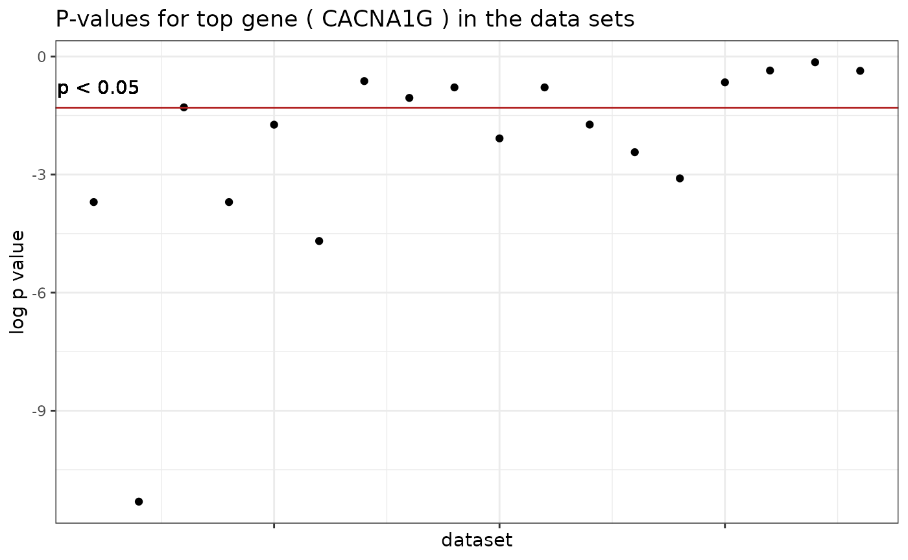
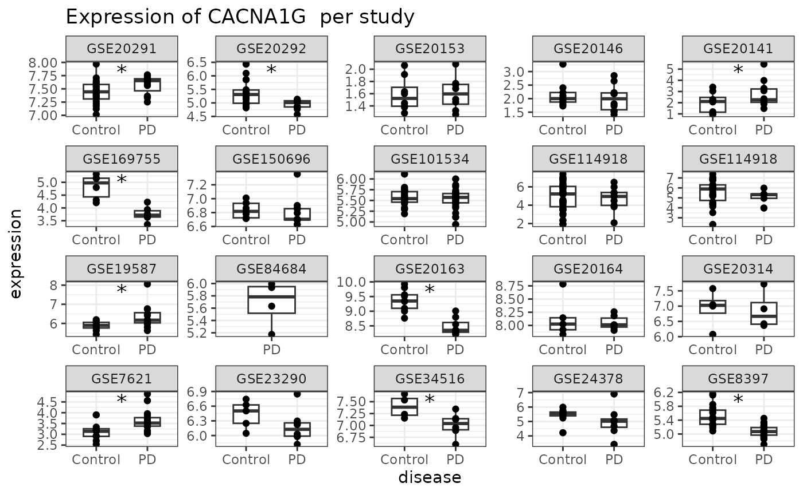
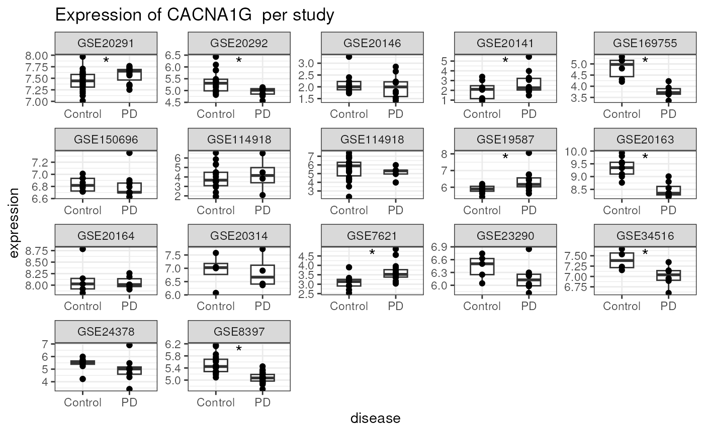

vignettes/metanalysis.Rmd
metanalysis.RmdGemma.R contains a large number of datasets representing a wide array of conditions. These datasets are manually annotated by our curators to facilitate discovery and categorization making it a useful tool for meta-analysis.
In this example we search Gemma for datasets comparing healthy controls and patients with Parkinson’s Disease. Our curators use ontology terms to annotate datasets when possible. This allows us to use the MONDO Disease Ontology term “MONDO:0005180” to search for datasets and samples annotated with the term to make sure we are accessing datasets relevant for our purposes with minimal effort.
The get_datasets function can be used to find datasets
of interest, either using ontology terms or plain text. Since
Parkinson’s Disease has a unambiguous ontology term in the Disease
Ontology, we will be using it to avoid acquiring datasets that
tangentially mention the disease in their descriptions. Here we also
limit our results to only include human samples since we are not
interested in models from other species and samples that are explicitly
from the brain using the ontology term for brain. See documentation for
the function for a detailed explanation of available options
# getting all resulting datasets using limit and offset arguments
results <- get_datasets(filter = "allCharacteristics.valueUri = http://purl.obolibrary.org/obo/MONDO_0005180 and allCharacteristics.valueUri = http://purl.obolibrary.org/obo/UBERON_0000955",
taxa ='human') %>% get_all_pages()
results %>% select(experiment.shortName,experiment.name) %>% head experiment.shortName
<char>
1: GSE7621
2: GSE7307
3: GSE8397
4: GSE20168
5: GSE20333
6: GSE20146
experiment.name
<char>
1: Expression data of substantia nigra from postmortem human brain of Parkinson's disease patients (PD)
2: Human body index - transcriptional profiling
3: Expression profiling of the Parkinsonian Brain
4: Transcriptional analysis of prefrontal area 9 in Parkinson's disease
5: Gene expression profiling of parkinsonian substantia nigra
6: Expression analysis of dissected GPi in Parkinson's diseaseWhile we know that all the resulting datasets were annotated for the term for Parkinson’s Disease, we currently do not know how many of them are comparisons of healthy controls and patients with Parkinson’s Disease. We also do not know if the datasets have batch effects that may affect our findings.
For this example, we decided we should not include data sets that
have a batch confound (though that is up to the user). Gemma internally
handles batch correction if batch information is available for the
dataset. We will be looking at experiment.batchEffect
column. As explained in the get_datasets documentation,
this column will be set to -1 for datasets where batch confound is
detected, 0 for datasets without available batch information and to 1 if
the data is clear of batch confounds.
We now want to ensure that the differential expressions we analyze
compare control and Parkinson’s Disease patients. This information is
available via get_dataset_differential_expression_analyses
which returns the experimental groups for differential expression
analyses performed for the dataset. The columns we are primarily
interested in are baseline.factors which typically records
the control group of the differential expression analysis and
experimental.factors which typically records the test
case
experiment_contrasts <- results$experiment.shortName %>%
lapply(function(x){
out = get_dataset_differential_expression_analyses(x)
}) %>% do.call(rbind,.)The contrasts we are interested in should have a
factor.category of “disease” and it should have “http://purl.obolibrary.org/obo/MONDO_0005180” in it’s
experimental.factors column as the URI for a factor.
The factor we are interested in is Parkinson’s Disease in
experimental.factorValue or “http://purl.obolibrary.org/obo/MONDO_0005180” in
experimental.factors’s value.URI. We also need
to make sure that the baseline that the sample is compared against is a
control experiment, samples annotated with “reference subject role” or
“http://purl.obolibrary.org/obo/OBI_0000220”
parkin_contrasts <- experiment_contrasts %>%
filter(factor.category == 'disease') %>%
filter(sapply(experimental.factors,function(x){
"http://purl.obolibrary.org/obo/MONDO_0005180" %in% x$value.URI
}) &
sapply(baseline.factors,function(x){
"http://purl.obolibrary.org/obo/OBI_0000220" %in% x$value.URI
}))In the next steps we will be downloading expression data in bulk. If you are here to just try the code out, you can speed the process a bit by limiting the number of experiments to deal with
# arbitrarily select a few datasets
# not executed in this example
parkin_contrasts <- parkin_contrasts[1:5,]Now that we have our relevant contrasts, we can download them using
get_differential_expression_values. This function can be
used to download differential expression fold change and p values,
either using the experiment name/ids or more specifically using the
result.IDs
differentials <- parkin_contrasts$result.ID %>% lapply(function(x){
# take the first and only element of the output. the function returns a list
# because single experiments may have multiple resultSets. Here we use the
# resultSet argument to directly access the results we need
get_differential_expression_values(resultSets = x)[[1]]
})
# some datasets might not have all the advertised differential expression results
# calculated due to a variety of factors. here we remove the empty differentials
missing_contrasts <- differentials %>% sapply(nrow) %>% {.==0}
differentials <- differentials[!missing_contrasts]
parkin_contrasts <- parkin_contrasts[!missing_contrasts,]differentials is now a list of data frames containing
the differential expression information. To run a simple meta-analysis,
we need the p values for the genes from the relevant contrasts.
condition_diffs <- seq_along(differentials) %>% lapply(function(i){
# iterate over the differentials
diff = differentials[[i]]
# get the contrast information about the differential
contrast = parkin_contrasts[i,]
p_vals = diff[[paste0('contrast_',contrast$contrast.ID,"_pvalue")]]
log2fc = diff[[paste0('contrast_',contrast$contrast.ID,"_log2fc")]]
genes = diff$GeneSymbol
data.frame(genes,p_vals,log2fc)
})
# we can use result.IDs and contrast.IDs to uniquely name this.
# we add the experiment.id for readability
names(condition_diffs) = paste0(parkin_contrasts$experiment.ID,'.',
parkin_contrasts$result.ID,'.',
parkin_contrasts$contrast.ID)
condition_diffs[[1]] %>% head genes p_vals log2fc
1 ALMS1 9.500e-03 0.2934
2 PRSS36 3.924e-05 -0.5074
3 SLC5A3 4.354e-06 1.8432
4 AGPAT4 6.912e-01 -0.1074
5 NUDT16-DT 5.978e-01 0.0418
6 DR1 1.389e-01 0.2875Now that we have acquired the values we need for a meta-analysis from Gemma, we can proceed with any methodology we deem suitable for our analysis.
In this example we will use a very simple approach, Fisher’s combined
p-value test. This is implemented in the fisher
function from poolr package. Fisher’s method has the
advantage that it operates on the p-values, which are in the processed
differential expression results in Gemma. It has some disadvantages like
ignoring the direction of the expression change (Gemma’s p-values are
two-tailed) and is very sensitive to a single ‘outlier’ p-value, but for
this demonstration we’ll go with it.
The first step is to identify which genes are available in our results:
all_genes <- condition_diffs %>% lapply(function(x){
x$genes %>% unique
}) %>% unlist %>% table
# we will remove any gene that doesn't appear in all of the results
# while this criteria is too strict, it does help this example to run
# considerably faster
all_genes <- all_genes[all_genes==max(all_genes)]
all_genes <- names(all_genes)
# remove any probesets matching multiple genes. gemma separates these by using "|"
all_genes <- all_genes[!grepl("|",all_genes,fixed = TRUE)]
# remove the "". This comes from probesets not aligned to any genes
all_genes <- all_genes[all_genes != ""]
all_genes %>% head[1] "A2M" "AAAS" "AACS" "AAGAB" "AAK1" "AAMP" Now we can run the test on every gene, followed by a multiple testing correction.
fisher_results <- all_genes %>% lapply(function(x){
p_vals <- condition_diffs %>% sapply(function(y){
# we will resolve multiple probesets by taking the minimum p value for
# this example
out = y[y$genes == x,]$p_vals
if(length(out) == 0 ||all(is.na(out))){
return(NA)
} else{
return(min(out))
}
})
fold_changes <- condition_diffs %>% sapply(function(y){
pv = y[y$genes == x,]$p_vals
if(length(pv) == 0 ||all(is.na(pv))){
return(NA)
} else{
return(y[y$genes == x,]$log2fc[which.min(pv)])
}
})
median_fc = fold_changes %>% na.omit() %>% median
names(median_fc) = 'Median FC'
combined = p_vals %>% na.omit() %>% fisher() %>% {.$p}
names(combined) = 'Combined'
c(p_vals,combined,median_fc)
}) %>% do.call(rbind,.)
fisher_results <- as.data.frame(fisher_results)
rownames(fisher_results) = all_genes
fisher_results[,'Adjusted'] <- p.adjust(fisher_results[,'Combined'],
method = 'fdr')
fisher_results %>%
arrange(Adjusted) %>%
select(Combined,Adjusted,`Median FC`) %>%
headWe end up with quite a few differentially expressed genes in the meta-analysis (Fisher’s method is very sensitive)
sum(fisher_results$Adjusted<0.05) # FDR<0.05[1] 5316
nrow(fisher_results) # number of all genes[1] 6235Next we look at markers of dopaminergic cell types and how they rank compared to other genes. Parkinson’s Disease is a neurodegenerative disorder, leading to death of dopaminergic cells. We should expect them to show up in our results.
# markers are taken from https://www.eneuro.org/content/4/6/ENEURO.0212-17.2017
dopa_markers <- c("ADCYAP1", "ATP2B2", "CACNA2D2",
"CADPS2", "CALB2", "CD200", "CDK5R2", "CELF4", "CHGA", "CHGB",
"CHRNA6", "CLSTN2", "CNTNAP2", "CPLX1", "CYB561", "DLK1", "DPP6",
"ELAVL2", "ENO2", "GABRG2", "GRB10", "GRIA3", "KCNAB2", "KLHL1",
"LIN7B", "MAPK8IP2", "NAPB", "NR4A2", "NRIP3", "HMP19", "NTNG1",
"PCBP3", "PCSK1", "PRKCG", "RESP18", "RET", "RGS8", "RNF157",
"SCG2", "SCN1A", "SLC12A5", "SLC4A10", "SLC6A17", "SLC6A3", "SMS",
"SNCG", "SPINT2", "SPOCK1", "SYP", "SYT4", "TACR3", "TENM1",
"TH", "USP29")
fisher_results %>%
arrange(Combined) %>%
rownames %>%
{.%in% dopa_markers} %>%
which %>%
hist(breaks=20, main = 'Rank distribution of dopaminergic markers')
In agreement with our hypothesis, we can see that the dopaminergic markers tend to have high ranks in our results.
Now that we have our results, we can take a look at how the
expression of one of our top genes in these experiments. To do this we
will use the get_dataset_expression_for_genes function to
get the expression data. Once we get the expression data for our genes
of interest, we will use the get_dataset_samples function
to identify which samples belongs to which experimental group.
Note: as of this writing (early 2023), the Gemma.R methods used in this section are not yet released in Bioconductor; install via devtools to try it out.
For starters, lets look at our top pick and the its p values in the individual datasets, on a log scale:
# the top gene from our results
gene <- fisher_results %>% arrange(Adjusted) %>% .[1,] %>% rownames
p_values <- fisher_results %>%
arrange(Adjusted) %>%
.[1,] %>%
select(-Combined,-`Median FC`,-Adjusted) %>%
unlist %>%
na.omit()
#sum(p_values<0.05)
#length(p_values)
# p values of the result in individual studies
p_values %>% log10() %>%
data.frame(`log p value` = .,dataset = 1:length(.),check.names = FALSE) %>%
ggplot(aes(y = `log p value`,x = dataset)) +
geom_point() +
geom_hline(yintercept = log10(0.05),color = 'firebrick') +
geom_text(y = log10(0.05), x = 0, label = 'p < 0.05',vjust =-1,hjust = -0.1) +
theme_bw() + ggtitle(paste("P-values for top gene (", gene, ") in the data sets")) +
theme(axis.text.x = element_blank()) This shows that the gene is nominally significant in some but not all of the data sets.
To examine this further, our next step is to acquire gene expression
data from the relevant datasets using get_dataset_object.
We will use both dataset ids and resultSet ids when using this function
since some of the returned analysis are only performed on a subset of
the data. Providing resultSet ids allows us to harmonize the
differential expression results with expression data by returning the
relevant subset.
# we need the NCBI id of the gene in question, lets get that from the original
# results
NCBIid <- differentials[[1]] %>% filter(GeneSymbol == gene) %>% .$NCBIid %>% unique
#NCBIid
expression_frame <- get_dataset_object(datasets = parkin_contrasts$experiment.ID,
resultSets = parkin_contrasts$result.ID,
contrasts = parkin_contrasts$contrast.ID,
genes = NCBIid,type = 'tidy',consolidate = 'pickvar')
# get the contrast names for significance markers
signif_contrasts <- which(p_values < 0.05) %>% namesFinally, we’ll make a plot showing the expression of the gene of interest in all the data sets. This helps us see the extent to which there is evidence of consistent differential expression.
expression_frame <- expression_frame %>%
filter(!is.na(expression)) %>%
# add a column to represent the contrast
dplyr::mutate(contrasts = paste0(experiment.ID,'.',
result.ID,'.',
contrast.ID)) %>%
# simplify the labels
dplyr::mutate(disease = ifelse(disease == 'reference subject role','Control','PD'))
# for adding human readable labels on the plot
labeller <- function(x){
x %>% mutate(contrasts = contrasts %>%
strsplit('.',fixed = TRUE) %>%
purrr::map_chr(1) %>%
{expression_frame$experiment.shortName[match(.,expression_frame$experiment.ID)]})
}
# pass it all to ggplot
expression_frame %>%
ggplot(aes(x = disease,y = expression)) +
facet_wrap(~contrasts,scales = 'free',labeller = labeller) +
theme_bw() +
geom_boxplot(width = 0.5) +
geom_point() + ggtitle(paste("Expression of", gene, " per study")) +
geom_text(data = data.frame(contrasts = signif_contrasts,
expression_frame %>%
group_by(contrasts) %>%
summarise(expression = max(expression)) %>%
.[match(signif_contrasts,.$contrasts),]),
x = 1.5, label = '*',size=5,vjust= 1)
R version 4.3.3 (2024-02-29)
Platform: x86_64-pc-linux-gnu (64-bit)
Running under: Ubuntu 22.04.4 LTS
Matrix products: default
BLAS: /usr/lib/x86_64-linux-gnu/openblas-pthread/libblas.so.3
LAPACK: /usr/lib/x86_64-linux-gnu/openblas-pthread/libopenblasp-r0.3.20.so; LAPACK version 3.10.0
locale:
[1] LC_CTYPE=en_US.UTF-8 LC_NUMERIC=C
[3] LC_TIME=en_US.UTF-8 LC_COLLATE=en_US.UTF-8
[5] LC_MONETARY=en_US.UTF-8 LC_MESSAGES=en_US.UTF-8
[7] LC_PAPER=en_US.UTF-8 LC_NAME=C
[9] LC_ADDRESS=C LC_TELEPHONE=C
[11] LC_MEASUREMENT=en_US.UTF-8 LC_IDENTIFICATION=C
time zone: UTC
tzcode source: system (glibc)
attached base packages:
[1] parallel stats graphics grDevices utils datasets methods
[8] base
other attached packages:
[1] stringr_1.5.1 ggplot2_3.5.0 poolr_1.1-1 dplyr_1.1.4
[5] gemma.R_2.99.2 BiocStyle_2.30.0
loaded via a namespace (and not attached):
[1] tidyr_1.3.1 sass_0.4.9 utf8_1.2.4
[4] generics_0.1.3 stringi_1.8.3 digest_0.6.35
[7] magrittr_2.0.3 timechange_0.3.0 evaluate_0.23
[10] grid_4.3.3 bookdown_0.38 fastmap_1.1.1
[13] jsonlite_1.8.8 BiocManager_1.30.22 httr_1.4.7
[16] purrr_1.0.2 fansi_1.0.6 scales_1.3.0
[19] textshaping_0.3.7 jquerylib_0.1.4 cli_3.6.2
[22] rlang_1.1.3 bit64_4.0.5 munsell_0.5.1
[25] withr_3.0.0 cachem_1.0.8 yaml_2.3.8
[28] tools_4.3.3 memoise_2.0.1 colorspace_2.1-0
[31] mathjaxr_1.6-0 curl_5.2.1 assertthat_0.2.1
[34] vctrs_0.6.5 R6_2.5.1 lubridate_1.9.3
[37] lifecycle_1.0.4 fs_1.6.3 htmlwidgets_1.6.4
[40] bit_4.0.5 ragg_1.3.0 pkgconfig_2.0.3
[43] desc_1.4.3 pkgdown_2.0.8 pillar_1.9.0
[46] bslib_0.7.0 gtable_0.3.4 data.table_1.15.4
[49] glue_1.7.0 systemfonts_1.0.6 highr_0.10
[52] xfun_0.43 tibble_3.2.1 tidyselect_1.2.1
[55] knitr_1.46 farver_2.1.1 htmltools_0.5.8.1
[58] labeling_0.4.3 rmarkdown_2.26 compiler_4.3.3